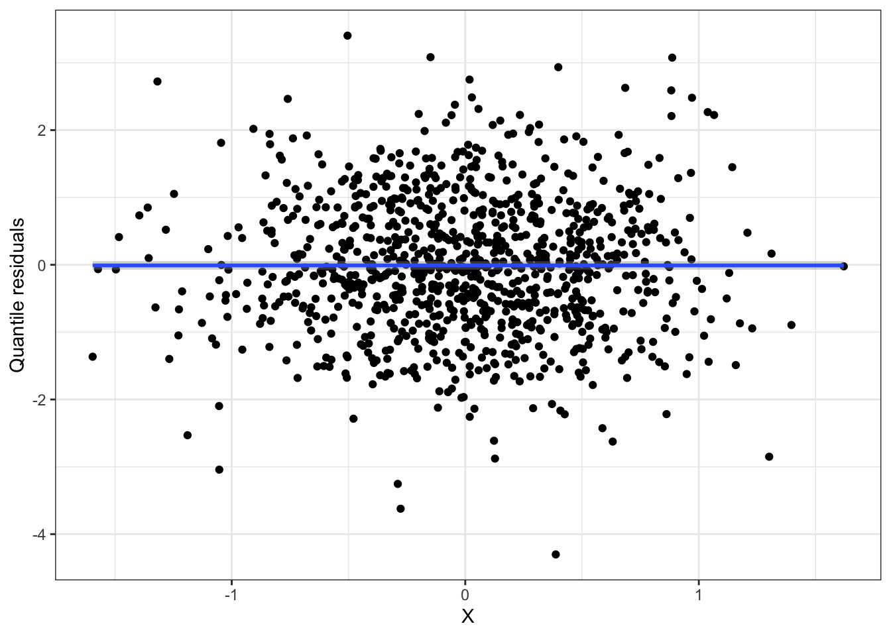
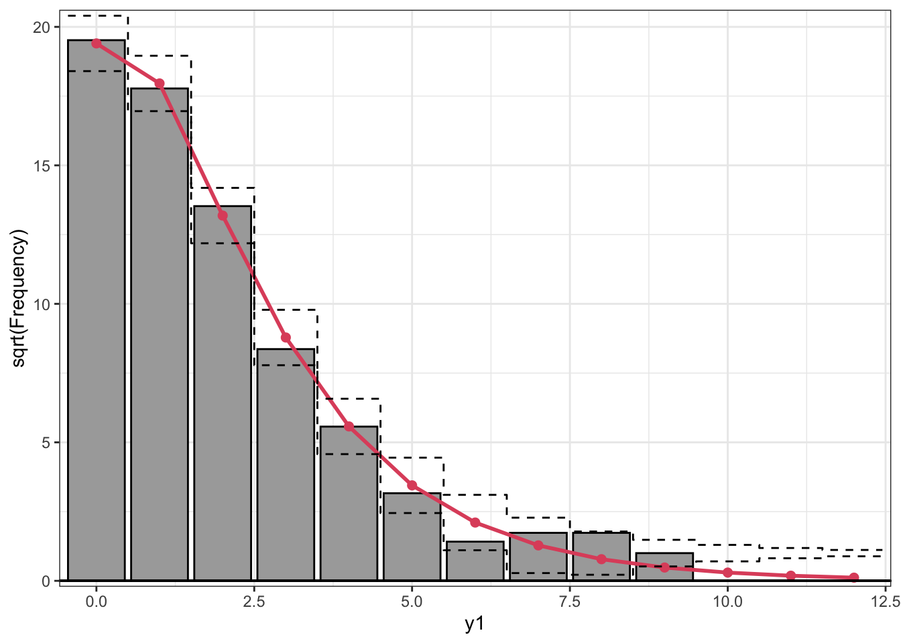

When you are finished, render the file as an HTML and submit the HTML to Canvas (let me know if you encounter any problems)
Poisson distribution assumptions
Consider the Poisson regression model
\[Y_i \sim Poisson(\lambda_i)\]
\[\log(\lambda_i) = \beta_0 + \beta_1 X_i\]
As we discussed in class, this model makes assumptions about shape, distribution, independence, and randomness. As always, to assess the independence and randomness assumptions we have to think about the data generating process. For the shape and distribution assumptions, however, we can use diagnostic plots.
There are a variety of ways to assess these assumptions. In this class activity, we will look at two visual tools: quantile residual plots and rootograms. Quantile residual plots can provide information about both the distribution assumption and the shape assumption; rootograms provide information about how well our model fits the observed data.
where \(X_i \sim N(0, 0.5)\). Note that the Poisson regression assumptions are satisfied for this model.
n <-1000x <-rnorm(n, sd =0.5)y1 <-rpois(n, lambda =exp(x))m1 <-glm(y1 ~ x, family = poisson)summary(m1)
Call:
glm(formula = y1 ~ x, family = poisson)
Coefficients:
Estimate Std. Error z value Pr(>|z|)
(Intercept) -0.02153 0.03387 -0.635 0.525
x 1.08305 0.06129 17.671 <2e-16 ***
---
Signif. codes: 0 '***' 0.001 '**' 0.01 '*' 0.05 '.' 0.1 ' ' 1
(Dispersion parameter for poisson family taken to be 1)
Null deviance: 1456.9 on 999 degrees of freedom
Residual deviance: 1136.4 on 998 degrees of freedom
AIC: 2630.7
Number of Fisher Scoring iterations: 5
Quantile residual plot
Using the qresid function from the statmod package, we can construct a quantile residual plot for our fitted model:
library(statmod)library(tidyverse)data.frame(x = x, resids =qresid(m1)) |>ggplot(aes(x = x, y = resids)) +geom_point() +geom_smooth() +theme_bw() +labs(x ="X", y ="Quantile residuals")

Interpreting quantile residual plots is similar to interpreting residual plots in a linear regression model. Some features to note:
The residuals are randomly scattered around 0, with no clear pattern
The variance of the residuals appears constant
Most of the residuals lie between -2 and 2 (if the model is a good description of the data, the quantile residuals should be approximately standard normal)
Rootogram
A rootogram is a visual tool which compares a histogram of the observed counts for the response variable (on the square root scale) to the predicted frequencies from the fitted model:
library(topmodels)rootogram(m1, style="standing")

There is one bar for each distinct value of the response variable, and the height of the bar is the square root of the frequency of that value in the observed data. The red points and lines represent the predicted frequency of each value, using the fitted model. The dashed horizontal lines at each bar provide a margin of error for the estimates.
If the model is a good fit to the data:
The histogram bars will be close to the predictions (in red) from the fitted model
Breaking the Poisson distribution assumption
The data we generated above really do come from a Poisson distribution (we used the rpois function to simulate it!). What happens if the assumption of Poisson data is wrong?
The code below generates data where the response comes from a distribution called the Negative Binomial, which is not a Poisson. However, we still fit a Poisson regression model, so we are using the wrong distribution in our model:
n <-1000x <-rnorm(n, sd =0.5)y2 <-rnbinom(n, size=0.5, mu=exp(x))m2 <-glm(y2 ~ x, family = poisson)
Re-create the quantile residual plot. What has changed in the quantile residual plot? How does it compare to the plot when all the assumptions were satisfied?
Re-create the rootogram. What has changed? How does it compare to the plot when all the assumptions were satisfied?
Breaking the shape assumption
So far, we have seen what happens if the shape assumption is correct, but the Poisson distribution assumption is wrong. What happens if the Poisson distribution assumption is correct, but the shape assumption is wrong?
The code below simulates data for which the shape assumption is wrong:
n <-1000x <-rnorm(n, sd =0.5)y3 <-rpois(n, lambda =exp(x^2))m3 <-glm(y3 ~ x, family = poisson)
Re-create the quantile residual plot. What has changed in the quantile residual plot? How does it compare to the plot when all the assumptions were satisfied?
Re-create the rootogram. What has changed? How does it compare to the plot when all the assumptions were satisfied?